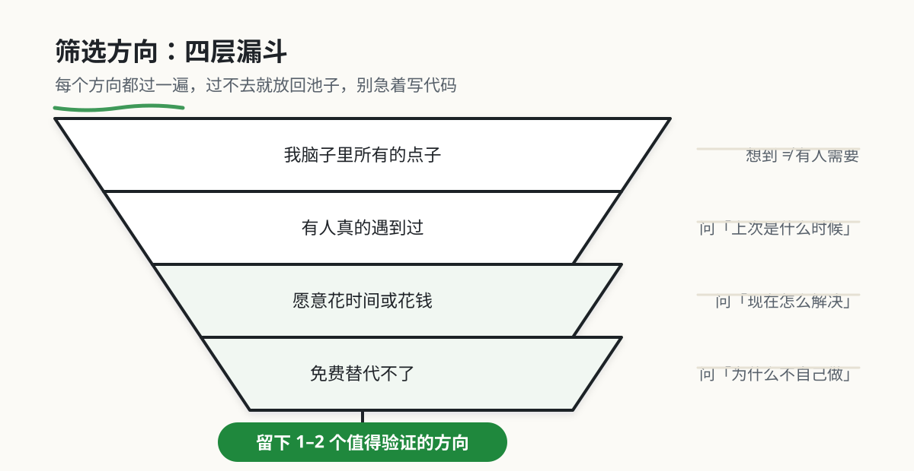

2. 筛选值得做的方向
本章目录 · 1 节
如何判断一个好点子
本章导读
上一章从日常经历、公开讨论和产品评价中收集了一批原始线索。接下来先别急着写代码，要把线索整理成方向，再选出更值得验证的一个。
一个方向是否值得做，不能只看它听起来是否新颖。我们还要观察问题出现得是否频繁、影响是否明显、用户现在怎样解决，以及他们是否愿意投入时间或费用。
本章会通过小明的故事，把这些判断放进具体场景中。你将逐步整理候选方向，并留下几个有证据支持、值得继续了解的产品概念。下一章，我们会进一步分析用户真正想完成的事情。
本节路径：Step 1（建立判断标准） → Step 2（挖掘日常痛点） → Step 3（横向切分人群） → Step 4（纵向深挖场景） → Step 5（验证需求真伪） → Step 6（打磨产品概念）。
Step 1：建立判断标准 —— 什么样的需求用户愿意买单
为什么这一章很重要？
有人可能会觉得奇怪："这不是一门教 Vibe Coding 的课吗？为什么要先学'找需求'？直接开始写代码不行吗？"
确实，市面上很多编程课都是直接教你做项目：做个 Todo List、做个计算器、做个个人博客……这些项目确实能帮你熟悉语法和工具，但问题是：
方向错了，越深入错得越多。
想象一下：
- 你花两周时间做了一个"日历管理系统"，但市面上已经有 100 个更好的
- 你做了一个"卡路里拍照计算"，但用户用一次就卸载了
- 你做了一个"个人记账本"，但连你自己都懒得用
练习项目可以用于熟悉工具，也可以展示你如何分析和解决问题。若想继续做成产品，还需说明它服务谁、改善了哪一步，以及你观察到了什么结果。
更残酷的是：既然我们要投入时间学习，为什么不追求更好的结果？
Vibe Coding 已经能快速把想法变成产品，那我们更应该学会找到值得做的想法。先用小项目练习，再把需求验证加入其中，观察是否有人愿意持续使用。
这就是为什么我们要先学"找到好点子"。
笔者私以为，时间是很宝贵的，既然做，我们就做到最好，不然为什么不去玩呢？作为责任，笔者也会竭尽全力，支持你做到最好。
就算所有人都不相信你能做好，笔者也会坚定不移盼望着你能做到最好。选择了 vibecoding 做产品，那就试试看自己能到哪一个尽头吧！

开篇：独立开发程序员小明的故事
下面用虚构的小明练习判断产品方向。故事中的下载、留存、亏损、报价和市场估算数字均为教学设定，不是市场调查或经营实绩。分析重点是从哪些行为获得证据，而不是记住这些数字。
小明是一名程序员，工作三年了。有一天他突然想到：要不做一个健身 APP 吧，帮用户制定健身计划、记录训练数据。这个想法让他很兴奋，觉得自己终于找到了一个可以做的项目。
接下来的一年，小明几乎把所有业余时间都搭进去了。他做了一个功能很全的 APP——课程模块、打卡系统、社区功能、数据分析，该有的都有。界面也做得挺好看，至少他自己觉得挺满意的。
上线那天，小明满怀期待。他花了不少钱做推广，第一个月就有 5 万人下载。看起来开局不错，对吧？
但很快问题就来了。用户下载之后，用一次就卸载了，7日留存只有 5%。他做了几个付费功能，但几乎没有用户愿意掏钱。更让他沮丧的是，Keep、薄荷健康、FitTime 这些成熟产品，功能比他全，内容比他好，用户为什么要换到他的 APP？
一年下来，小明亏了 20 万。
他坐在电脑前，看着后台惨淡的数据，心里只有一个问题：我的 APP 做得挺好的啊，为什么没人用？更没人愿意买单？

小明的失败，不是因为技术不行，也不是因为产品做得不好。说实话，他的 APP 功能挺全的，界面也挺好看的。
问题出在起点。
他从来没问过一个最基本的问题：用户真的需要吗？
他看到健身 APP 市场很大，Keep 估值多少亿，就觉得这是个好机会。但他没搞清楚几件事：用户为什么需要另一个健身 APP？和 Keep 相比，我的差异化是什么？用户愿意为此付费吗？
方向错了，越深入错得越多。 他花了一年时间，把一个错误的方向做得越来越完善，结果只是离成功越来越远。
这一章我们做什么
这一章，我们来帮小明复盘一下。看看他的问题到底出在哪，然后一起找到真正有人愿意买单的产品方向。
我们将分三步走：
第一幕：找到真需求 —— 先搞清楚什么样的需求用户才愿意买单
第二幕：挖出好点子 —— 学会从普通想法中挖掘出有价值的商业机会
第三幕：AI对话打磨 —— 用 AI 把想法变成可落地的产品方案
第一幕：找到真需求
小明很沮丧，但没放弃。他开始反思一个问题：到底什么样的需求，用户才愿意买单？
小明的困惑：为什么用户不买单？
他去找了几个用过他 APP 的朋友，想听听他们的真实想法。
朋友 A 说："你这个 APP 做得挺好，但我已经在用 Keep 了，为什么要切换？"
朋友 B 说："你让我记录每次训练，太麻烦了，我懒得记。"
朋友 C 说得更直接："免费功能够用了，我为什么要付费？"
这些回答让小明突然明白了问题在哪。
第一个问题：用户不切换，是因为现有方案已经够好了。 Keep 等成熟产品功能已经很全，用户习惯也养成了，迁移成本很高。你做一个差不多的产品，用户凭什么要换？
第二个问题：用户不愿意改变习惯。 记录训练这件事，对用户来说太麻烦了。改变习惯会增加采用成本，需要观察用户在哪一步停下，并判断收益是否足以抵消这些成本；不存在“超过三个习惯就会失败”的统一界限。
第三个问题：相对现有做法的改善不够明确。 免费产品也能解决一部分任务。要比较你的方案是否在可靠性、方便程度或具体场景上有足够收益，而不是看到免费替代品就放弃。
什么是真需求？
小明开始研究那些让用户愿意买单的成功产品。他发现了一个共同点：这些产品解决的都不是"我觉得有用"的需求，而是用户愿意为之付费、愿意为之改变行为、愿意为之忍受不便的那种需求。
换句话说，真需求是用户用脚投票投出来的，不是产品经理拍脑袋想出来的。
案例：让用户买单的产品
小明研究了几个成功案例，想搞清楚它们到底抓住了什么痛点。
美菜网：让小餐馆老板睡个好觉
表面上看，美菜网做的事情很简单：帮餐馆买菜。但如果你仔细想，餐馆老板为什么要用它？
因为小餐馆老板每天凌晨 4 点就要起床去批发市场，很辛苦，而且经常被坑。美菜网做的事情，不是简单的"电商卖菜"，而是重构了整个供应链，让小餐馆老板能睡个好觉。
痛点越痛，付费意愿越强。省下的时间和体力，比省下的菜钱更有价值。

小红书：解决选择困难
表面上看，小红书是"分享海外购物心得"。但用户为什么愿意花时间在上面看笔记？
因为面对海量商品，用户不知道什么值得买、什么不值得买。他们需要一个信任的人帮自己筛选，节省时间，避免踩坑。
小红书解决的其实是两个深层痛点：选择困难和信任缺失。用户愿意为"省时间"和"避坑"付费，这就是为什么小红书能做起来。
看完这些案例，小明有了一个重要发现。
这些案例提示我们，功能之外还要观察时间、体力、信息可信度与情绪负担。它们都是可能的价值来源，不能由产品名字推断所有用户的购买动机。
先记录具体经历，再判断用户愿意为哪种改善付出什么。
需求的三层：痛点、爽点、痒点
小明进一步研究，发现用户的需求可以分为三种类型：
痛点（Pain Point）—— 恐惧驱动
本质： 用户正在经历的、让他们感到痛苦、焦虑、不便的问题。不解决会很难受，甚至威胁到生存或安全。
例子：
- 糖尿病患者不知道吃多少碳水会血糖飙升（恐惧：健康威胁）
- 小餐馆老板凌晨 4 点起床去批发市场（恐惧：生存艰辛）
关键： 用户愿意为此付费，因为不解决会"很痛"。
爽点（Delight Point）—— 即时满足
本质： 用户有一个需求，能够立即被满足，产生即时的愉悦感。
例子：
- 外卖 30 分钟送达（即时满足饥饿）
- 一键生成精美 PPT（省时省力的爽感）
关键： 让用户"爽"是留存的关键，但单独作为付费点较弱。
痒点（Itch Point）—— 虚拟自我
本质： 用户想要变得更好、更酷、更精致，但不是必须的。满足了会开心，不满足也没事。
例子：
- 记录每天喝了多少水（想象中的自律生活）
- 用 AI 给照片加艺术滤镜（想象中的艺术品味）
关键： 用户为"痒点"买单的意愿较弱，因为不解决也没事。
这三个词可以帮助描述动机，但不构成固定的优先级：
- 减少困难或损失：观察问题发生频率、后果与现有解决成本。
- 获得即时体验：观察用户是否喜欢、是否再次使用，以及体验能否持续。
- 实现期待中的自己：观察用户是否为此投入时间、行动或费用。
同一个产品可能同时满足几类动机。判断下一步投入时，比较证据与实现代价，不凭标签断言用户一定买单。
关键洞察： 很多产品经理犯的错误是：用痛点的方式去推销痒点的产品。
比如："记录喝水能让你更健康"——喝水确实健康，但不记录也不会不健康。这是把痒点包装成痛点，用户不会买账。
验证真需求的5步法
小明想：那我有一个想法时，怎么快速判断它是否值得投入？
他学习了产品经理常用的 5 步判断法（详细内容见附录A）：
第一步：直接和真实用户聊天，了解他们现在的做法
找到 10 个目标用户。问他们："你现在怎么解决这个问题？" 如果用户已经在用某种方法，说明问题确实存在。如果用户说不需要解决，那可能不是真需求。
第二步：分析用户现有的替代方案，找出你的优势
用户现在可能用其他产品、Excel、靠记忆，或者忍受着不解决。你需要弄清楚这些方案有什么缺点。你的产品要比它们好很多，用户才愿意换。
.jpg)
第三步：测试用户是否愿意为你的产品付钱
先写明对象、报价、交付范围和观察周期。可以观察实际预约、试用后的再次使用，或在说明交付与退款条件后开展预售。记录接触人数、完成行为的人数及原因；付费只是其中一种证据。
例如接触 10 人，其中 2 人预约，只能记录为“本次 2/10 预约”，不能直接推断整个市场有 20% 的转化率。10 人是起步样本，不是统计充分性的保证。
第四步：估算这个市场有多大，能不能赚钱
先按明确周期估算：可触达目标用户数 × 假设付费比例 × 每位付费用户该周期的收入。结果是收入情景，不是已证实的市场规模或利润；还需扣除获客、交付、维护和退款等成本。
第五步：思考你的产品有什么护城河，防止别人抄袭
考虑这些壁垒：技术难度、网络效应、品牌、成本优势。这些能帮你长期保持竞争力。
本幕小结：小明的收获
真需求的标准
- 商业项目要检查实际支付与持续使用，也要分清使用者和付款者。
- 用户愿意为此改变行为。
- 没有解决方案时，用户会有很大损失。
避开假需求
- 痒点不是痛点，不能当成真需求。
- 市场太小，很难支撑商业模式。
- 方案比问题还复杂，用户会放弃。
优先级排序
- 优先比较问题频率、影响、实际行为和验证成本，不把动机标签当作固定排序。
本幕输出
- 我理解了什么是真需求。
- 我掌握了需求的三层分类：痛点、爽点、痒点。
- 我学会了用 5 步判断法验证需求真伪。
第二幕：挖出好点子
小明现在知道了什么是真需求，但他还是不知道从哪里开始。总不能凭空想一个需求出来吧？
他决定从自己最熟悉的事情开始——身边的人和事。
从自己出发：小明的姐姐
小明想起了他的姐姐。姐姐刚生完孩子，总是抱怨没时间健身，肚子上的赘肉减不下去，整个人很焦虑。
有一天小明问她："你现在怎么解决健身的问题？"
姐姐叹了口气说："跟着 Keep 练吧，但那些动作不适合产后身体，做完腰更疼了。去健身房？没人帮忙看孩子。请私教？一节课 300 到 500 块，太贵了。自己瞎练吧，又怕受伤。"
小明听完，觉得这可能就是他要找的真需求。
姐姐的困扰其实很具体：时间碎片化，需要照顾宝宝，没有整块时间健身；身体有限制，腹直肌分离、盆底肌松弛，不能剧烈运动；心理很焦虑，身材走样，担心老公嫌弃，社交自卑；信息太混乱，网上信息太多，不知道什么运动适合产后；还有孤独感，没人理解她们的处境，缺乏同伴支持。
这些都是真实的痛点，不是"有也挺好"的痒点。

横向切分：不同人群的需求
小明意识到，"健身 APP"这个想法太泛了。他想做的是帮助所有人健身，但问题是，所有人的需求都不一样。
他做了一个横向切分，把"想健身的人"分成几类（详细方法见附录B）：
健身增肌人群需要精确计算蛋白质摄入，手动记录太麻烦，他们的付费意愿很高，追求效率。糖尿病患者必须严格控制碳水，但外出就餐很难估算，这是刚需，愿意付费，复购率也高。产后妈妈想恢复身材但没时间计算，需要简单方案，时间敏感，需要一站式服务。外卖党天天吃外卖不知道吃了多少热量，这是高频场景，但付费意愿中等。考研学生需要高效学习工具，但不知道用什么，这是刚需，但客单价低。
小明选择了"产后妈妈"这个人群。为什么？
姐姐的经历让小明更容易找到起步线索，但他不是产后用户本人，也不能代表这个群体。他需要继续了解不同人的恢复阶段、可用时间、已有专业支持和预算，并调查现有产品；不能先假定付费意愿强或没有竞争者。
产品经理的切分逻辑
为什么切分人群这么重要？
聚焦情境相近的人群，能让访谈与原型更具体，也更容易发现共性。但人群越细分不代表需求越强：服务规模、触达成本、专业要求和实际预算仍需核对。
纵向深挖：完整的用户场景
找到人群后，小明没有停留在"产后健身"这个单一功能上。他想更深入地理解用户的完整场景（详细方法见附录C）。
他观察了姐姐一天的生活。
早上 6 点，宝宝刚睡着，姐姐有 30 分钟空闲。她想运动，但怕吵醒宝宝，也不知道做什么动作安全。
上午 10 点，姐姐抱着宝宝哄睡，腰很酸。她想做一些修复运动，但手没空。
下午 3 点，宝宝睡觉，姐姐想运动。但身体很累，不知道还能不能做。
晚上 8 点，姐姐终于有空了，但很焦虑。她看着镜子里的自己，觉得人生完蛋了，翻着以前的照片偷偷哭。
小明发现，姐姐的痛点不是"没有健身课程"，而是"产后恢复的恐惧和焦虑"。

产品经理的场景思维
理解问题要同时看具体任务、遇到的阻碍和产生的感受。付费意愿是商业模式的一条线索，不是定义用户困难的必要条件。
产后妈妈面对镜子里走样的身材时，真正的痛点不是"不知道怎么健身"，而是恐惧——担心身体恢复不好，留下后遗症；焦虑——看着镜子里的自己，觉得人生完蛋了；无助——不知道从何开始，也没人指导；孤独——别人随便生，我却要恢复这么久。
设计方案时，要核对实际任务与情绪体验是否都得到改善。是否愿意付费，还取决于替代方案、预算和付款决策。
价值重构：从"健身APP"到"产后妈妈恢复助手"
基于以上分析，小明重新设计了这个产品。
重构后的产品概念："产后妈妈恢复助手"
核心定位： 不只是健身工具，而是产后妈妈的"专属康复教练+心理支持者"
核心功能：
碎片化训练：
- 每次只需 10-15 分钟
- 宝宝睡觉时也能练
- 提供"抱着宝宝也能做"的动作
产后专属课程：
- 按产后阶段分级（0-3个月、3-6个月、6个月以上）
- 针对腹直肌分离、盆底肌修复的专项训练
- 每个动作都有"产后注意事项"提示
AI 动作纠正：
- 手机摄像头识别动作
- 实时提示"膝盖太弯了"、"背部要挺直"
- 提示可能的动作问题；不能据此保证避免受伤，健康建议仍需专业评估
心理支持社区：
- 只有产后妈妈的私密社区
- 分享恢复进度，互相鼓励
- 专业心理咨询师入驻
个性化方案：
- 根据生产方式（顺产/剖腹产）、身体情况定制
- 考虑哺乳期的特殊需求
商业模式：
- 基础课程免费
- 高级课程：99元/月（含 AI 动作纠正、专属方案）
- 一对一私教：299元/月（线上指导）
- 社群会员：199元/年（含心理支持、专家答疑）
竞争壁垒：
- 专业性：与产后康复机构合作，有医学背书
- 社区粘性：产后妈妈的情感连接很强
- 数据积累：是否改善方案，需要专业评估；数据量本身不能证明准确性
估算练习（以下是假设，实际项目需另查有年份和口径的来源）：
- 假设相关人群每年新增 1000 万
- 假设相关市场规模为 500 亿；这个数不参与下面的收入计算，也不能证明你能获得用户
- 目标：服务 1% 的产后妈妈 = 10万用户
- ARPU（每用户平均收入）：500元/年
- 潜在收入：5000万/年
对比原始 idea 和重构后的概念：
| 维度 | 原始想法 | 重构后 |
|---|---|---|
| 目标用户 | 所有健身人群（大而泛） | 产后妈妈（精准） |
| 解决痛点 | 记录训练（痒点） | 产后恢复焦虑（痛点） |
| 竞争壁垒 | 技术（容易被复制） | 专业性+社区+数据 |
| 付费意愿 | 需与现有免费方案比较 | 需按具体任务、预算与正式报价验证 |
| 扩展空间 | 有限 | 可扩展到孕期、备孕期 |
这就是从"一个功能"到"有人买单的产品"的进化。
更多例子：从普通idea到好点子
小明觉得这个方法很好用。他又用同样的方法分析了几个其他例子，想看看这个方法是不是通用的（详细案例见附录D）。
例子一：从"卡路里测量"到"糖友安心吃"
普通想法是拍照识别食物热量，帮助减肥的人控制饮食。但问题是市面上已经有薄荷健康、MyFitnessPal 等成熟产品了。
小明横向切分了一下，发现糖尿病患者这个人群很有意思：他们必须严格控制碳水，但外出就餐很难估算。纵向深挖他们的场景：餐前不知道这个菜能不能吃，担心血糖飙升；餐中需要实时提醒"你已经吃了多少碳水"；餐后需要记录血糖变化，看和饮食的关系。
重构后的产品叫"糖友安心吃"，定位是糖尿病患者的"饮食安全助手"。
例子二：从"新闻助手"到"投研情报官"
普通想法是聚合各大平台新闻，省得一个个打开。但今日头条、腾讯新闻等已经做得很好了。
小明横向切分后发现，金融分析师这个人群有特殊需求：他们需要追踪特定行业动态，但信息太分散。纵向深挖他们的场景：早上看 overnight 美股动态、汇率变化；上午追踪持仓公司的公告、行业新闻；下午研究潜在投资标的，需要大量行业信息。
重构后的产品叫"投研情报官"，定位是金融从业者的"信息雷达和决策助手"。
例子三：从"校园二手平台"到"毕业清仓助手"
普通想法是校园二手交易平台。但闲鱼、转转已经做得很好了。
小明横向切分后发现，毕业生这个人群有特殊需求：东西太多，一个个卖太麻烦。纵向深挖他们的场景：毕业前一周就要离校，没时间慢慢卖；不知道谁需要我的东西；议价、交货、收款，太繁琐。
重构后的产品叫"毕业清仓助手"，定位是毕业生的"离校资产管家"。
本幕小结：小明的收获
通过第二幕，小明明白了：
- 从自己出发
- 自己或身边人的经历可以提供线索，再用不同对象的经历核对
- 爱好是最好的起点，热情是最好的驱动力
- 横向切分人群
- 不要服务"所有人"，找到"最痛的那个人群"
- 聚焦后更容易提出具体假设，付费意愿和可触达规模仍需验证
- 纵向深挖场景
- 描述完整的用户旅程：使用前、使用中、使用后
- 找到情绪触点：恐惧、焦虑、无助、孤独……
- 价值重构
- 从"功能"升级为"解决方案"
- 从"工具"升级为"助手/管家/伙伴"
本幕输出：
- 找到了一个精准的目标用户（产后妈妈）
- 理解了用户的完整场景和真实情绪
- 重构了产品概念，有了明确的差异化定位
第三幕：AI对话打磨
小明现在有了一个明确的产品方向：产后妈妈恢复助手。但他还是不知道具体怎么做，从哪里开始，技术实现难度大不大。
他决定用 AI 来帮助自己打磨产品概念，把想法变成可执行的计划。
第一轮：抛出原始想法
小明把他的想法告诉 AI："我想做一个产后妈妈恢复助手 APP，帮助产后妈妈恢复身材。但我担心技术实现难度，特别是 AI 动作纠正这个功能，我一个人能做吗？"
第二轮：AI 帮助规划 MVP
AI 回复说："很好的问题！让我们做一个 MVP（最小可行产品）规划。"
AI 建议分三个阶段来做。第一阶段是 1-2 个月，目标是验证需求。不做 APP，先做一个微信小程序，只提供产后专属课程（视频）和打卡社区。用人工方式提供动作指导，用户上传视频，教练回复。目标是验证产后妈妈是否愿意付费。
第二阶段是 3-6 个月，如果第一阶段验证成功，就增加核心功能。开发 AI 动作纠正，可以用现成的 SDK，比如百度人体识别。增加个性化方案，优化社区功能。
第三阶段是 6-12 个月，规模化。开发独立 APP，与产后康复机构合作，拓展到孕期、备孕期。
关于技术实现，AI 建议 AI 动作纠正使用现成的 AI 能力，比如百度、腾讯的 API，不需要从零开发，降低成本。前期用人工加 AI 混合模式，逐步过渡。
启动成本方面，小程序开发 1-2 万（外包）或自己用 AI IDE 做，内容制作找产后康复教练合作，推广从妈妈群、小红书开始。
验证指标是第一个月 100 个用户，10% 付费转化率。如果达到，说明需求真实，继续投入；如果达不到，及时调整方向。

第三轮：小明提出担忧
小明想了想，又问："我担心内容制作的问题。产后康复课程需要专业指导，我没有医学背景，怎么保证课程质量？"
第四轮：AI 提供解决方案
AI 回复说："这是很多技术型创业者的担忧，但有解决方案。"
方案一是与专业人士合作。找产后康复教练、医院营养科医生合作，你提供技术和产品，他们提供专业内容，可以采用分成模式。
方案二是整合现有优质内容。初期可以用公开的产后康复视频，比如 YouTube、B站上的。自己做内容审核和整理，后期再制作原创内容。
方案三是用户生成内容。鼓励有经验的妈妈分享自己的恢复方法，用社区投票的方式筛选优质内容，逐步建立内容生态。
AI 建议先用方案一。具体操作是：找到 2-3 位产后康复教练，与他们谈合作，你开发产品，他们提供课程。收入分成，你拿 70%，他们拿 30%。这样既能保证内容质量，又能降低成本。前期课程制作 0 元，用分成模式，你只需要投入开发时间和推广成本。
我的建议：先用方案一
具体操作：
- 找到 2-3 位产后康复教练
- 与他们谈合作：你开发产品，他们提供课程
- 收入分成：你拿 70%，他们拿 30%
- 这样既能保证内容质量，又能降低成本
前期成本：
- 课程制作：0 元（用分成模式）
- 你只需要投入开发时间和推广成本
第五轮：小明问推广问题
小明还有最后一个担忧："推广成本会不会很高？怎么找到产后妈妈这个群体？"
第六轮：AI 提供推广策略
AI 回复说："产后妈妈这个群体其实很好找，推广成本可以很低。"
最推荐的是小红书。搜索"产后恢复"、"腹直肌分离"等关键词，找到相关博主，私信合作。用"免费体验 1 个月"的方式换取推广，成本几乎为 0。
其次是妈妈群。搜索微信群、QQ 群，以"产后恢复经验分享"的名义进群，分享干货内容，不要直接广告，逐步建立信任。
还可以和医院妇产科合作，提供免费的产后恢复指导，在医院发放宣传单，成本就是印刷费几百元。或者和母婴店合作，放置宣传物料，购买母婴产品赠送体验卡，成本就是体验卡制作费。
验证指标是：第一个月 100 个用户，10 个付费用户（10% 转化率），总推广成本小于 1000 元，获客成本小于 10 元每人。如果能达到这个指标，说明需求真实，可以继续投入。
最终：小明有了清晰的计划
经过 6 轮对话，小明终于有了清晰的计划。
第一阶段是 1-2 个月：做一个微信小程序，找 2-3 位产后康复教练合作（分成模式），只提供产后专属课程（视频）和打卡社区，用人工方式提供动作指导。目标是 100 个用户，10% 付费转化率。
第二阶段是 3-6 个月：如果第一阶段验证成功，继续投入。增加 AI 动作纠正功能，增加个性化方案，优化社区功能。
第三阶段是 6-12 个月：开发独立 APP，与产后康复机构合作，拓展到孕期、备孕期。
启动成本很低：开发自己用 AI IDE 做（0 元），内容与教练分成（前期 0 元），推广用小红书加妈妈群（小于 1000 元）。总成本小于 1000 元。
AI 对话打磨的5步法
通过这个案例，小明总结出了一个与 AI 对话的标准流程（详细内容见附录E）。
第一步：抛出原始想法。 描述你的初步想法，哪怕很粗糙也没关系。告诉 AI 你的担忧，比如竞争激烈、不知道怎么差异化等。
第二步：让 AI 帮你规划 MVP。 最小可行产品应该包含什么功能？分几个阶段？每个阶段的目标是什么？技术实现难度大吗？
第三步：提出你的担忧。 技术实现难度？内容制作成本？推广成本？用户获取难度？把你的顾虑都告诉 AI。
第四步：让 AI 提供解决方案。 针对你的担忧，AI 会给出具体建议。多个方案对比，选择最优。成本估算。
第五步：最终确认计划。 整理一个清晰的行动计划，设定验证指标。如果达不到，及时调整方向。
提示词模板：
我想做一个 [产品概念]，
但我担心 [你的担忧]。
请帮我：
1. 规划一个 MVP
2. 给出具体的技术实现建议
3. 估算成本
4. 设定验证指标
本幕小结：小明的收获
通过第三幕，小明明白了三件事。
第一，用 AI 对话打磨产品概念。 不要期待一次对话就得到完美答案，多轮迭代。告诉 AI 你的观察、经历、身边人的反馈。如果 AI 的建议不合理，及时指出。最后一定要落到具体的行动计划。
第二，MVP 的核心原则。 最小化，只做最核心的功能。可验证，能够快速验证需求是否真实。低成本，用最低的成本验证。
第三，验证指标。 付费转化率大于 10%，说明需求真实，值得投入。付费转化率 5-10%，说明需求存在，但需要打磨。付费转化率小于 5%，说明需求不成立，及时调整。
本章输出：
- 有了清晰的 MVP 计划
- 知道了技术实现路径
- 设定了验证指标
终章：你的行动
记忆口诀
一人一事一切入，横切纵挖找痛点，AI对话磨概念，五步验证再动手
解释：
- 一人： 从你自己出发，你天然理解这个群体
- 一事： 聚焦一件具体的事情，不要贪多
- 一切入： 找到切入点，越细分越好
- 横切： 横向切分人群，找到最有付费意愿的用户
- 纵挖： 纵向深挖场景，理解用户的完整旅程
- AI对话： 用 AI 对话打磨产品概念
- 五步验证： 用 5 步判断法验证需求真伪
📚 本章作业
从最近遇到的一件小麻烦开始，不用另外编一个宏大的题目。
- 用一句话写下这个麻烦。
- 列出三类可能遇到它的人，再选出你最了解的一类。
- 写清楚他在什么情况下遇到问题，现在又是怎样解决的。
- 把点子重新说一遍：它是给谁用的，会帮他把什么事情做得更好。
完成后，把这段话拿给一位朋友看，听听他是否能马上理解。
附录：SOP 方法论
附录A：需求分析的5步判断法
当你有一个想法时，如何快速判断它是否值得投入？
第一步：用户验证——找到10个目标用户
不要问："你会用我的产品吗？"（礼貌性的肯定不能证明需求）
要问：
- "你现在怎么解决这个问题？"（了解真实行为）
- "最近一周，这个问题让你困扰了几次？"（了解频率）
- "为了解决它，你花了多少钱/时间？"（了解付费意愿）
- "如果有个解决方案，但需要改变习惯，你愿意吗？"（了解改变成本）
判断标准：
- 如果有3个以上用户说"我每天都在为这事头疼"——可能是痛点
- 如果用户说"挺有意思，但我不着急"——大概率是痒点
- 如果用户说"我现在用XX解决，但不太满意"——有机会
**关键问题：**用户现在用什么方法解决这个问题？
| 替代方案类型 | 说明 | 机会判断 |
|---|---|---|
| 没有替代方案 | 用户默默忍受 | 大机会，但需要教育市场 |
| 用很笨的方法 | Excel、手工、多人协作 | 好机会，用户渴望更好的方案 |
| 用多个工具拼凑 | A工具+B工具+C工具 | 好机会，整合有价值 |
| 用成熟产品 | 但用户不满意 | 有机会，但需要差异化 |
| 用成熟产品 | 用户很满意 | 机会很小，除非有颠覆式创新 |
什么是"颠覆式创新"？
简单定义： 不是把产品做得更好，而是用更简单/便宜的方式，服务之前被忽视的用户群体。
例子：
- 传统手机 → 智能手机（不是功能更多，而是交互方式完全不同）
- 传统出租车 → 滴滴（不是车更好，而是让叫车变得随时随地）
- 传统书店 → 电子书（不是书更多，而是让携带和购买更方便）
关键： 颠覆式创新往往从"低端市场"或"新用户群体"开始，逐步向上侵蚀。
案例：
- 糖尿病患者现在用"经验+猜测"控制饮食（很笨的方法）——机会大
- 普通减肥者用薄荷健康（成熟产品，满意度中等）——有机会做细分
- 学生用微信群做二手交易（多个工具拼凑）——有机会做整合
一种可观察的方法：预售或定金
操作步骤：
- 做一个简单的落地页，描述你的产品概念
- 放上"预售"或"预约"按钮
- 明确报价、交付时间与退款条件，再记录实际支付、退款和后续使用；低价定金不能代替正式价格的验证
判断时同时记录样本来源、人数、报价和观察周期。不要用“超过 10%”或“低于 5%”作为通用结论；朋友样本、折扣价和低额定金都会影响结果。把本轮证据与事先写下的假设比较，再决定继续、修改或停止。
**注意：**口头承诺弱于实际行为，但付定金的人也未必会持续使用。观察完整过程，并区分使用者与付款者。
简单公式：
周期收入估算 = 可触达目标用户数 × 假设付费比例 × 每位付费用户的周期收入
估算练习：校园二手交易平台（下列人数与比例均为假设；全国人数并非单个项目可触达人数）
- 假设用户基数：4000 万
- 有二手交易需求的：50% = 2000万
- 愿意用平台的：10% = 200万
- 年交易频次：2次
- 平台抽成：5%
- 平均客单价：100元
- 假设年佣金收入 = 200万 × 2 × 100 × 5% = 2000万；未扣除成本和退款，也未验证触达与成交
判断可行性时，把能触达的人数、转化假设和交付成本分别列出来，尝试保守、中性、乐观三种情景。整体市场大不代表当前项目能盈利，小市场也不自动适合副业。
**关键问题：**如果产品做起来了，别人抄袭怎么办？
常见的护城河类型：
| 护城河类型 | 说明 | 例子 |
|---|---|---|
| 网络效应 | 用户越多，产品价值越大 | 微信、滴滴 |
| 数据积累 | 数据越多，算法越准 | 今日头条、抖音 |
| 品牌认知 | 用户心智占领 | 可口可乐、耐克 |
| 规模效应 | 规模越大，成本越低 | 京东物流、亚马逊 |
| 技术专利 | 核心技术壁垒 | 华为、大疆 |
| 转换成本 | 用户迁移成本高 | 企业软件、操作系统 |
早期项目的现实：
- 大部分早期项目没有明显的护城河
- 但不要紧，关键是跑得快
- 先占领市场，再建立壁垒
附录B：横向切分人群方法
不要试图服务"所有XX用户"，而是找到一个特定的人群，他们的需求更痛、更具体。
第一步：列出所有可能的细分人群
针对你的产品概念，列出所有可能的人群。
第二步：评估每个人群的商业价值
| 评估维度 | 说明 |
|---|---|
| 痛点强度 | 这个人群的需求是痛点还是痒点？ |
| 付费意愿 | 愿意为解决方案付多少钱？ |
| 市场规模 | 这个人群有多少人？ |
| 竞争程度 | 现有解决方案是否令人满意？ |
| 你对人群的理解 | 你是否理解这个人群？是否有接触渠道？ |
第三步：选择一个人群深入分析
选择一个：
- 痛点最痛
- 付费意愿最强
- 你最理解
- 竞争相对不激烈
的人群。
切分示例
产品概念： 记账 APP
| 细分人群 | 痛点 | 付费意愿 | 市场规模 | 竞争程度 |
|---|---|---|---|---|
| 普通上班族 | 记录麻烦 | 低 | 大 | 高 |
| 小微企业主 | 个人/公司支出混淆 | 高 | 中 | 中 |
| 自由职业者 | 收入不稳定，需要预测现金流 | 高 | 中 | 中 |
| 留学生家长 | 想知道孩子花多少钱，但孩子不说 | 高 | 小 | 低 |
选择： 留学生家长（痛点最痛，付费意愿高，竞争相对不激烈）
附录C：纵向深挖场景方法
找到人群后，不要停留在单一功能，而是要理解用户的完整场景。
第一步：描述用户的一天
从早到晚，描述用户在使用你的产品时的完整场景。
第二步：分析每个场景的痛点
在每个场景中，用户遇到了什么问题？有什么情绪？
第三步：找到情绪触点
恐惧、焦虑、无助、孤独、愤怒、后悔……
第四步：重构价值
基于场景和情绪，重构产品价值。
深挖示例
人群： 产后妈妈
| 时间 | 场景 | 痛点 | 情绪 |
|---|---|---|---|
| 早上6点 | 宝宝刚睡着，有30分钟空闲 | 不知道做什么动作安全 | 恐惧 |
| 上午10点 | 抱着宝宝哄睡，腰很酸 | 手没空，想做修复运动 | 焦虑 |
| 下午3点 | 宝宝睡觉，想运动 | 身体很累，不知道还能不能做 | 无助 |
| 晚上8点 | 终于有空了 | 看着镜子里的自己，觉得人生完蛋了 | 抑郁 |
| 长期 | 没人理解 | 觉得只有自己这么痛苦 | 孤独 |
重构价值： 从"健身工具"升级为"康复教练+心理支持者"
附录D：更多从普通idea到好点子的例子
例子一：从"记账APP"到"留学资金管家"
普通想法： 自动记账 APP，连接银行卡自动分类消费
问题： 市面上已经有随手记、挖财、支付宝账单……
横向切分：
- 留学生家长：想知道孩子在外国花了多少钱，是否超支
纵向深挖：
- 痛点不是"记账"，而是"失控感"——孩子花多少钱不知道、花在哪里不知道
- 场景：每个月看到信用卡账单，但孩子从来不主动说花了什么
重构后： "留学资金管家"——不只是记账，而是让家长对孩子的海外消费"心中有数"
核心功能：
- 子女消费实时同步
- 超支预警
- 每月消费分析报告
- 同类学生消费对比（"你家孩子比平均水平多花 20%"）
例子二：从"番茄钟工具"到"远程工作证明"
普通想法： 番茄钟 APP，帮助用户专注工作
问题： 手机自带屏幕使用时间、Forest、番茄 ToDo……
横向切分：
- 远程工作者：需要向老板证明"我真的在工作"
纵向深挖：
- 痛点不是"不专注"，而是"信任危机"——老板看不到我，怎么证明我在工作？
- 场景：每天下班，老板问"今天工作怎么样？"，没法证明
重构后： "远程工作证明"——帮远程工作者建立与雇主的信任
核心功能：
- 自动工作时间追踪
- 生产力报告
- 屏幕活动摘要（隐私保护版）
- 每天自动生成"工作报告"，发送给上级
例子三：从"二手书交易"到"绘本图书馆"
普通想法： 二手书交易平台
问题： 多抓鱼、闲书、孔夫子旧书网……
横向切分：
- 宝妈群体：孩子绘本看完就闲置，但买新的很贵
纵向深挖：
- 痛点不是"买书贵"，而是"绘本生命周期短"——孩子3岁看的书，4岁就不看了
- 场景：家里堆满了绘本，孩子都不看了，但扔掉可惜
重构后： "绘本图书馆送到家"——不是卖二手书，而是提供绘本的"使用权租赁"
核心功能：
- 绘本订阅制（每月寄5本适龄绘本，看完寄回换新的）
- 阅读进度追踪
- 适龄推荐
- 消毒保障
附录E：AI对话打磨产品概念的5步法
通过多轮 AI 对话，把普通的 idea 逐步打磨成可落地的精准产品概念。
操作：
- 描述你的初步想法（哪怕很粗糙）
- 告诉 AI 你的担忧（竞争激烈、不知道怎么差异化等）
提示词：
我想做一个 [产品概念]，
但我发现 [问题/担忧]。
操作：
- 让 AI 帮你制定最小可行产品计划
- 讨论技术实现难度和成本
- 设定验证指标
提示词：
请帮我：
1. 规划一个 MVP
2. 给出具体的技术实现建议
3. 估算成本
4. 设定验证指标
操作：
- 技术实现难度？
- 内容制作成本？
- 推广成本？
- 用户获取难度？
提示词：
我担心：
1. [担忧1]
2. [担忧2]
3. [担忧3]
操作：
- 针对你的担忧，给出具体建议
- 多个方案对比，选择最优
- 成本估算
提示词：
针对我的担忧，请给出具体的解决方案。
操作：
- 整理一个清晰的行动计划
- 设定验证指标
- 如果达不到，及时调整方向
提示词：
请帮我整理一个清晰的行动计划。
关键技巧
- 多轮对话： 不要期待一次对话就得到完美答案，多轮迭代
- 提供信息： 告诉 AI 你的观察、经历、身边人的反馈
- 质疑 AI： 如果 AI 的建议不合理，及时指出
- 聚焦执行： 最后一定要落到具体的行动计划
附录F：需求验证清单
在决定投入时间开发之前，用以下清单验证你的想法——核心问题是：用户会为此买单吗？
需求验证清单
- 用户画像清晰度
- ☐ 能否用一句话描述目标用户？
- ☐ 能否说出他们目前的替代方案是什么？
- ☐ 能否描述他们使用场景的具体细节？
- ☐ 这个人群有付费能力吗？
- 痛点强度评估
- ☐ 用户现在解决这个问题要付出什么代价？（时间/金钱/精力）
- ☐ 如果不解决这个问题，会有什么后果？
- ☐ 用户是否已经在寻找解决方案？
- ☐ 用户愿意为解决这个问题付多少钱？
- 解决方案差异化
- ☐ 和现有方案相比，你的优势是什么？
- ☐ 这个优势是否足够让用户愿意切换？
- ☐ 大平台要复制你的功能，难度大吗？
- ☐ 你的差异化是否足以支撑用户付费？
- 商业模式可行性
- ☐ 用户愿意为此付费吗？付多少？（一定要实际测试）
- ☐ 获客成本大概是多少？
- ☐ 用户生命周期价值（LTV）能否覆盖获客成本（CAC）？
- ☐ 有没有其他变现方式？（广告、增值服务、B端等）
- 快速验证方案
- ☐ 能否用最小成本（1-2 周）做出可测试的原型？
- ☐ 能否找到 10 个目标用户做访谈？
- ☐ 能否设计一个实验验证核心假设？
- ☐ 能否让用户预付定金验证付费意愿？
少问“你会用这个产品吗？” 对未来的口头判断容易受到礼貌或想象影响，最好继续追问最近一次真实经历。
要问：
- "你现在怎么解决这个问题？"（了解真实行为）
- "最近一周，这个问题让你困扰了几次？"（了解频率）
- "如果有一个解决方案，但需要你改变现在的习惯，你愿意吗？"（了解改变成本）
- "如果收费 XX 元，你会买吗？"（了解付费意愿）
验证要结合产品阶段。 早期可观察任务是否完成、用户是否再次使用；商业化验证再核对正式报价下的支付、退款和留存。对于企业产品，还要分清使用者与采购决策者。
本轮至少记录：
- 接触对象、招募来源和总人数。
- 报价、交付条件、观察周期及实际行为人数。
- 拒绝、退款或放弃的原因，以及下一轮准备改变的一个条件。
本章小结
在这一章，我们通过小明的故事，学习了如何用产品经理的视角审视产品想法——核心始终围绕：用户会为此买单吗？
核心要点
- 支持需求判断的三类证据：
- 用户为解决问题投入过时间、金钱或其他资源
- 用户愿意尝试改变做法，并在之后再次使用
- 问题带来了可描述的损失或阻碍；付款者与使用者可能不同
- 从普通 idea 到有人买单的产品的路径：
- 横向切分：找到情境相近的人群，再核对他们的需求与预算
- 纵向深挖：理解完整场景，解决情绪而不只是功能
- 价值重构：从工具进化为解决方案，建立付费理由
- 避开假需求的陷阱：
- 解决伪痛点（痒点而非痛点）
- 市场规模太小，无法支撑商业模式
- 解决方案比问题还复杂
- 验证付费意愿的方法：
- 找到 10 个目标用户深度访谈
- 让用户预付定金验证真实意愿
- 按本轮样本、报价和周期解释结果，不套用固定转化率阈值
- 用 AI 对话打磨产品概念：
- 多轮迭代，不断优化
- 聚焦执行，落到行动计划
- 设定验证指标，及时调整
记住： 好的产品经理不是凭空创造需求，而是发现那些被忽视、被低估、被错误满足的真实需求，并找到让用户愿意为之买单的方式。
自己检查一次：选一个候选方向，写下三行：“我亲眼看到或听到的经历”“我据此作出的假设”“下一步要观察的行为”。例如，“两位同事会后找不到责任人”是起步线索，“大家愿意为纪要工具付费”仍是假设；下一步可以让他们用一份行动清单完成真实交接，记录是否减少追问。不能用“大家都说好”补齐缺失的证据。
接下来，我们将用双钻设计模型梳理思路，并通过 Jobs to Be Done 理论和 The Mom Test 用户访谈方法，进一步验证你找到的方向是否成立。验证通过后，再动手把想法变成产品原型。